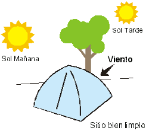
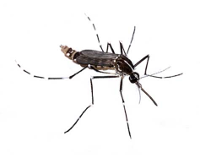
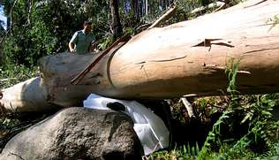
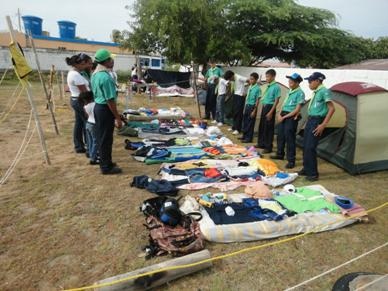

El sitio para acampar
Ubica tu campamento cerca de una fuente de agua potable, ya que esta es necesaria para beber, asearse y cocinar; pero lo suficientemente alejado (unos 50 metros como mínimo), como para evitar que cualquier objeto que ruede o algún desperdicio vaya a parar allí.
El sitio de las carpas debe estar lejos de los baños, del sector de la basura y de los caminos más transitados.
Ha de ser un lugar:
Alto, seco y protegido de los vientos fuertes, cuya dirección indican la inclinación de los pastos y las ramas de los árboles.
A la sombra, por lo menos durante la tarde.
La puerta de la carpa irá contraria al viento, y debe ubicarse preferentemente más baja que la parte trasera, para evitar que si llueve ingrese el agua que corre por el terreno.
Evita ubicarte con el viento a favor de las lagunas, lagos o represas, ya que esto aumenta el problema de los zancudos y jejenes.
Desecha también los lugares debajo de tendidos eléctricos, en cañadas, lechos de arroyos secos o recodos más bajos que el agua.
Tampoco debajo de árboles secos o cuyas ramas puedan caerse; puesto que todos estos son lugares riesgosos.
El sitio siempre estará limpio y ordenado, lo que además de dar una buena imagen de los Scouts, evita tentar a alimañas o animales salvajes.
El campismo y las inspecciones
Las inspecciones matutinas son una buena tradición que pueden ayudar en tu Tropa y Patrulla , y tienen como objetivo básico: Mantener en orden el lugar, garantizando una buena limpieza y sanidad, y estimular la buena presencia y el aseo.
Dependiendo del tipo de actividad se pueden aplicar varios tipos de inspecciones.
- Por los dirigentes...
- es la más común de todas, en ella tu Jefe y subjefes de Tropa recorren los rincones de patrulla, mientras las mismas permanecen formadas, luego se hacen las observaciones pertinentes.
- Por los guías...
- el Subguía queda a cargo mientras el Guía va a inspeccionar otra Patrulla, a su vez tu Patrulla es inspeccionada por otro Guía.
- Auto inspección...
- a la orden de tu Jefe de Tropa la Patrulla se inspecciona a si misma.
En actividades de varios días es recomendable alternar los modos de inspección, ya que esto resulta más entretenido y efectivo.
